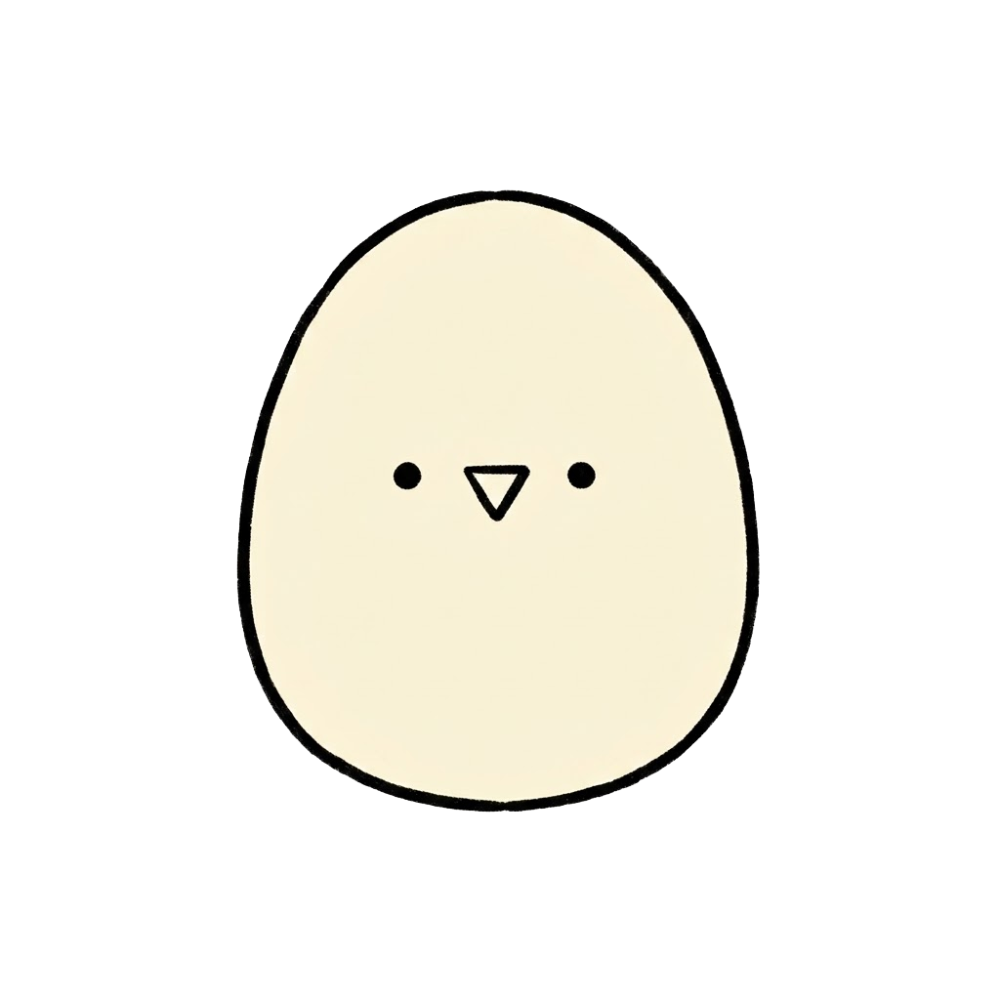

TAMAGORO'S LITTLE DETOUR · 404
このページは存在しないよ！
広告、気になっちゃった？
ぼくも見にきたけど、まだ何もなかったんだ。
せっかくだし、お部屋に戻っていっしょにあそぼ！

この広告の商品・リンク先は、パチペット生活の架空のものです。
広告、気になっちゃった？
ぼくも見にきたけど、まだ何もなかったんだ。
せっかくだし、お部屋に戻っていっしょにあそぼ！

この広告の商品・リンク先は、パチペット生活の架空のものです。